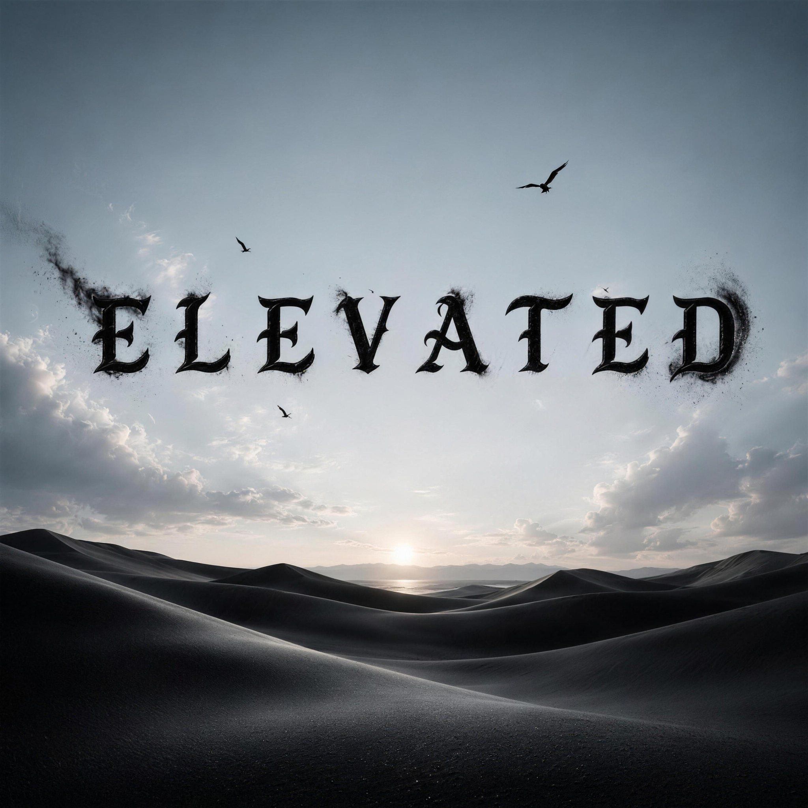

Elevated Field Sales

The Ladder
Your Growth
“Veni · Vidi · Vici” — I came, I saw, I conquered.
Learn, sell, grow.
1-on-1 coaching · Warm leads · Production bonuses
Build teams, duplicate systems, and scale.
Create your own culture · Give opportunity · Grow your business
Overrides, commission bonuses, and exclusive travel events.
Run multiple divisions of your own.
Teams across multiple campaigns · Access to the private network · Build your own social brand
Exact thresholds are published per division and given to you in writing on day one.
Your numbers, the day they land
Every rep gets a login. Not a weekly screenshot in a group chat.
My money
Earned, pending, and paid for the current period, with the next payout date.
My production
What you closed, your close rate, and how the period compares to the last one.
My team
Once you reach STL, your roster, their production, and the override it earned you.
Where I stand
Your current rung, and the two things that move you off it.
Divisions
Campaigns
Three campaigns, at three different stages. We would rather tell you which is which than have you find out in week two.
Live and hiring
Fiber
Verizon fiber contracts, door to door. Active territories, reps on the ground, commissions paying today. If you want to start this month, you start here.
In training
Virtual High Ticket
Closing high-ticket wellness solutions, fully remote. Onboarding and training are running now.
Queued
Life Insurance
Remote sales for licensed producers. Next campaign in line, not open yet.
Become Elevated
Join the movement.
Or write to careers@elevatedmgmt.co. Plain reply, one business day.